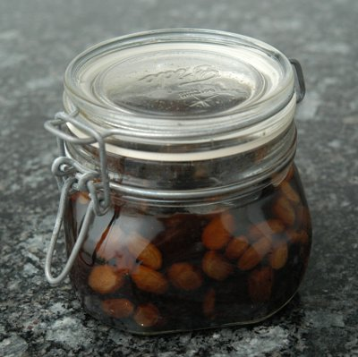

| Zutaten für 4 Personen: | |
| Erdbeeren | |
| Johannisbeeren | |
| Stachelbeeren | |
| Himbeeren | |
| Kirschen | |
| Brombeeren | |
| Steinfrüchte z.B. Aprikosen , Pflaumen, Pfirsiche, Reineclaudes, Zwetschgen, oder Mirabellen | |
| Birnen | |
| Ananas frisch | |
| blaue Trauben | |
| Rosinen | |
| gut | Zucker |
| 1 Flasche | Rum |
| Steinfrüchte | |
Zucker über entstielte und saubere Beeren verteilen, Rum darüber giessen und die Beeren mit einem kleinen Teller beschweren, damit sie nicht obenauf schwimmen.
Während der ersten Woche jeden Tag mit einer Holzkelle umrühren, damit sich der Zucker ganz löst. Dann mit Beeren und Kirschen weiter fahren. Darauf achten, dass die Früchte immer mit Rum bedeckt sind und nach Bedarf Zucker nachgeben. Aprikosen und andere Steinfrüchte entsteinen und halbieren. Birnen schälen, entkernen und vierteln. Die Ananas in kleine Fächer schneiden und zufügen. Gleichzeitig oder zuletzt die Traubenbeeren beigeben (am besten einige Male mit einer dünnen Nadel einstechen).
Darauf wird der Topf luftdicht (durch dazwischen Legen einer Cellophan-Folie) verschlossen. Im August wird der Topf zur Beigabe der Steinfrüchte wieder geöffnet. Aprikosen und Pfirsiche werden dabei in kleine Stücke oder Schnitze geschnitten und in den Topf gegeben.
Äpfel eigenen sich nicht für den Rumtopf Der Topf wird wieder luftdicht verschlossen. Von Zeit zu Zeit muss der Inhalt umgerührt werden. Sollte man dabei feststellen, dass der Inhalt gärt, so gibt es folgenden Tipp zu beachten. Die Flüssigkeit ableeren. Die Früchte mit etwas Zucker rasch aufkochen, abkühlen lassen, zurück in den Topf geben und wieder mit der Flüssigkeit übergiessen . Im Winter kann dann der Rumtopf genossen werden. Dabei gilt es folgende Faustregel zu beachten: Der Topf soll nicht früher als einen Monat nach der letzten Fruchtbeigabe konsumiert werden.
Den Rumtopf bis Anfang Dezember gut verschlossen im Keller stehenlassen. Erst dann hat er das volle Aroma entfaltet.
Herbert Eigenmann, Code: RMO